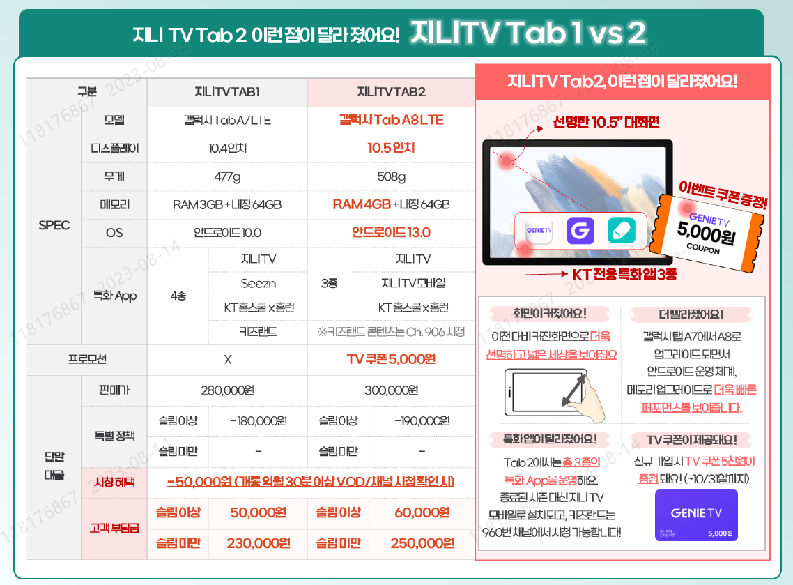
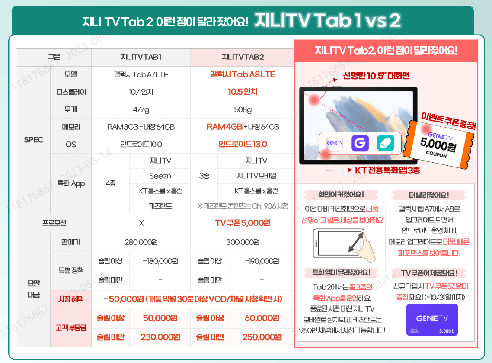

tv탭 권유_네비게이션 게임 활용
손바닥 두개 만한 사이즈에 큰 핸드폰이라고 보시면 되고요
집에서는 tv 로 보시고 외부에서는 youtube 라던지 아니면
내비게이션으로도 사용하고 게임같은 것도 휴대폰 화면보다 훨씬
큰화면으로 돌리시면 재미있거든요
이건 제가 써봐서 좋은건 압니다.
그냥 기계값만 40만원 다되는걸로 아는데 이번에 하시면 지원이 많이
돼서 부담금이 몇만원 안되는 걸로 알고 있는데 한번 상담이나
받아보시죠?
tv탭 권유_무더운 날씨
고객님 요새 너도 나도 찾는 핫한 상품하나 소개 시켜드리고 싶은데요~!
요새 날씨가 너무 덥잖아요 그럴때 안방에 작은 에어컨 하나 틀어놓으시고
삼성 10인지 테블릿하나 갖고 들어가셔서 누워서 보실수 있는 kt tv상품이
있거든요 .
조건이 좋고 신청자가 몰려서 바로 개통이 어렵긴 한데요 상담이나
한번 받아보시죠~ 할인도 엄청 해드리는데 한번 연결해드릴까요?
인터넷 추가 설치
고객님께서는 저희 인터넷 tv 전부 kt 로 이용하고 계시더라고요
여기 고객님 자택 뿐만 아니라 다른 이제 가게
라던지 이런 것에 에도 kt 인터넷설치하게 되시면 50 % 할인
혜택을 받을 수가 있는데 안내 받아 보시겠어요?
I,T,M동시권유
■ 권유멘트
-"고객님! 여름맞이 행사로 인터넷과 TV를 가입하시면
LG 50인치 티비를 무료로 제공하고 있고
현재 갤럭시 플립5나 폴더5 예약 기기변경 상담도 가능한데요~
전화주신 김에 혜택 가장 좋을 때 가격 알아보시는 거 어떠세요!?"
유선 상품 설치변경(이전)
■이전할 때 신청 해야 설치비 저렴해지는점 중점 안내
권유멘트 :고객님, 이사하시는 김에 TV 추가 한 대
더 가입해서 설치비도 할인받고 평생 반값으로 이용
해보시는 건 어떠세요?
■반론극복1
보통 다른 고객님들도 이런 혜택이 많으니 이사가실 때
추가 TV 가입하시는 경우가 많더라구요~
요금과 혜택 상담 한번 받아보시는게 어떠세요?
■반론극복2
-추가로 사은품 또는 가전제품 제공해드리는 행사 중이라
혜택 좋을 때 상담 한 번 받아보세요~
-나중에요~ : 지금 저희 고객센터 혜택이 너무 좋아요~
비교해보실 수 있도록 요금과 혜택 상담 한 번 받아보세요~
-괜찮아요~ : 간단하게 요금과 혜택 안내 한 번 받아보세요~
자신있게 권해드립니다~
■ 모바일 or 유선전화 단독 고객 ☞ 인터넷+TV 권유
혹시 혜택 챙겨드릴거 있는지 확인하다보니
인터넷 TV 가입 시 사은혜택으로 가전제품이나 백화점 상품권 제공되는데요,
안내 받아보시겠어요?
■ 인터넷 + 모바일 결합 고객 ☞ TV 권유
고객님 kt 인터넷을 0년 동안 사용해주셨는데요~
TV도 가입해서 이용하시면 결합해서 저렴하게 이용하실 수 있고
여름맞이 이벤트로 상품권이나 사은품 등 혜택도 챙겨가실 수 있는데
이번 기회에 안내 받아보시는건 어떠세요?
■ TV only & 모바일 이용 미결합 고객 ☞ 인터넷 권유
고객님 TV만 이용하고 계시는데, 인터넷 가입해서 결합하시면 TV 요금도
저렴해지고,모바일도 같이 결합해서 할인 받아보실 수 있거든요~~
전화주신 김에 안내 받아보시는건 어떠세요?
■ 인터넷+TV 기 이용 고객 ☞ 추가 티비 권유
고객님 추가 TV 가입하시면 평생동안 반값 할인 대상으로 확인되세요~
이런 혜택 이벤트가 언제 끝날지 모르는건데,
기회되실 때 안내 받아보시는건 어떠세요?
(TV 없어요)
마침 지니TV 탭 행사도 있어서,
TV가 없는 고객님들도 신청 많이 하고 계시거든요~
선연결도 필요없고 WiFi 이용해서 집안 어디서든 편리하게 보실수 있는데,
전화주신김에 안내받을 수 있도록 전문부서 연결 해드려 볼게요!!
tv권유
저희 본사에서 태블릿tv가 원래 가격보다도 이렇게까지 훨씬
저렴하게 지원된 적이 잘 없어서 지금이 좋은 기회거든요
실제로 반응이 좋아서 물량이 얼마 없는데 1~2분 내외로 간단
하게 안내 받아 보시고 결정해보시는 건 어떠세요?
tv권유
저희 본사에서 태블릿tv가 원래 가격보다도 이렇게까지 훨씬
저렴하게 지원된 적이 잘 없어서 지금이 좋은 기회거든요
실제로 반응이 좋아서 물량이 얼마 없는데 1~2분 내외로 간단
하게 안내 받아 보시고 결정해보시는 건 어떠세요?
tv권유
지금 테블릿 tv로 개통하는 상품이 한시적으로 풀렸는데 이건
조건이 괜찮아서 저도 하나 했거든요
좋더라구요 5만원 밖에 안되는 상품이라 한번 이벤트
끝나기 전에 상담이라도 받아보세요 저하고 친구도 하나 했거든요
인터넷+tv권유
근데요 고객님 모르시는 분들은 대형TV 돈주고 구입하시는데 요샌
인+티 상품 조건 좋을때 개통하시면 대형tv가 사은품으로 지급
되거든요. 조금 있음 입학시즌이라 통신사들끼리 엄청 경쟁하는데
이럴때 상담 짧게 받아보시고 조건 비교해 보시면
손해 보시는건 없거든요
인터넷+tv권유
댁에서 와이파이 없이 사용하시려면 답답하실텐데.... 아무래도 와이파이가
LTE ,5G보단 훨신 안정적이거든요 ,맘놓고 사용가능 하시고 유튜브,
인터넷 라디오 하루종일 틀어놔도 안끊기고 데이터 통화료 발생없는
인터넷+와이파이 하나씩은 돈도 얼마 안해서 알아보시는것도 손해 보실것
없거든요 .
그리고 그만큼 휴대폰 요금제를 다운받으시면 더 경제적이실수 있어서
한번 얘기나 들어보시죠
반론극복 1
아니요~! 됐어요~!
☞ 이번달 선착순 사은품 혜택이 너무 좋아서 챙겨 드리려고
말슴 드렸어요~
☞ 기회가 너무 좋아서 놓치기 아까운데 상담 한번 받아
보시는게 어떠세요?
반론극복 2
시간 없어요~ 바빠요~
☞통화하시기 편한 시간에 전화 드릴 수 있습니다~
몇 시가 편하세요?
☞간단하게 안내해드리고 있어서 잠깐의 통화로도
확인 가능하구요 이후에 상세한 상담은 편한 시간에
다시 전화드릴 수도 있습니다.
고객님 지금 봄맞이 특별 프로모션으로 인터넷 TV같이
가입하시면 50인지 삼성 TV에 상품권까지 추가로 드리고
있는 역대급 혜택이 있는데 상담 한번 받아 보시겠어요?
TV가 필요 없으시면 공기 청정기 건조기등 다양한 제품이
준비되어 있어요 어렵게 준비한 프로모션이라 수량 남아
있을때 상담 한번 받아보실수 있게 연결해드릴까요?
[인터넷 + TV - 일반전화만 있는 고객]
권유멘트 : 고객님~!전화만 이용중이시던데 인터넷과 TV도 같이 가입
해서 사용하시면 요금할인은 기본이고 43인지 TV 또는 삼성공기청정기
등 무료로 제공하는 프로모션 진행 중이라 상담 한 번 받아보시는건
어떠세요?
※아니요 됐어요 : 추가로 사은품 또는 가전제품 제공해드리는 행사
중이라 혜택 좋을때 상담 한번 받아보세요~!
※나중에요~! : 지금 저희 고객센터 혜택이 너무 좋아요~! 비교해
보실수 있도록 요금과 혜택 상담 한번 받아보세요 1-2분 밖에 안걸려요
※괜찮아요 : 간단하게 요금과 혜택 안내 한번 받아보세요~ 자신있게
권해드리고 짧게 설명해드리니 마음에 안드시면 그냥 안한다고 하심
됩니다 ~!
[인터넷 + TV ]
고객님~ 지금 인터넷과 TV는 가입이 안되어 있으신데 인터넷과 TV
같은 통신 상품은 지금금 같은 월초나 입학, 졸업 시즌에 가입하셔야
더 좋은 혜택을 받을 수 있는데요~
전화주신김에 잠깐 상담받아보시는거 어떠세요?
[인터넷 + TV ]
요금 넷플릭스를 많이 이용하시는데요~ 지금 KT에서 인터넷과 TV를
함께 가입하시면 상품권도 제공할 뿐만 아니라 , 올레 TV를 통해
넷플릭스를 바로 시청 할수 있는데요~
이왕 전화주신김에 상담 받아 보시겠습니까?
[인터넷 + TV ]
우리 고객님 저희 kt를 오랜기간 이용해주고 있으신데 인터넷과
tv를 추가로 이용하시면 기가 와이파이도 무료로 제공해드리고
가전 제품이나 상품권도 제공해 드리는 혜택이
있는데요 전화 주신김에 혜택상담 받아보시도록 전문 상담사
연결 해드릴까요?
[ TV ]
요즘은 각 방마다 tv를 설치해서 보시는데요 ......
추가하는 TV는 50% 할인된 가격으로 시청 가능하고 상품권까지
제공해드립니다.
기존 kt이용 고객님들만을 위한 할인 혜택이니 놓치지 말고
상담 연결 도와드릴까요?
[ TV _태블릿 권유]
신학기를 맞이해서 추가 TV가입하시면 요금은 50% 할인되고
삼성 갤럭시TAB을 단돈 5만원에 구매 가능한 행사 진행중입니다.
전화주신 김에 안내 받아 보시겠어요?
[ TV _태블릿 권유]
요즘 다들 유튜브나 넷플리스 시청 많이 하시잖아요?
봄맞이 특별 프로모션으로 추가 tv가입하시면 tv시청뿐만 아니라
OTT시청까지 모두 가능한 삼성 갤럭시 탭을 5만원에 제공해 드리고
있는데 , 수량 남아 있을때 놓치지 마시고 상담 받아 보시겠어요?
[ TV ]
지금 TV를 가입하시면 집에서 큰 화면으로 넷플릭스를 생생하게
시청하실수 있고 다양한 프로모션도 진행중인데 상담 받아보시도록
연결해드릴까요?
[ TV ]
지금 TV는 사용을 안하시는데 850만 가입자가 선택한 1등 브랜드인
KT TV를 가입 하시면 다양한 혜택을 누릴 수가 있습니다 .
마침 이벤트 기간이라 상품권도 제공해 드리는데요 전화 주신김에
혜택 상담 받아보시도록 연결해드릴까요?
[ TV ]
현재 고객님게서 kt휴대폰이랑 인터넷으로 결합해서 요금 할인 받고
계시잖아요~!? 댁에 tv를 사용중이시라면 TV로 KT걸로 가입하시면
요금할인도 더 많이 받을수 있고 지금 행사기간이라 전화 연결된 고객님께만
상품권을 제공해드리는데요~ 전화 주신 김에 상담 받아보시도록
연결해드릴까요?
[복수 TV ]
추가 TV를 가입하시면 가족끼리 보고 싶은 채널이 다를 땐 편하게
시청 할 수 있고 기존에 있는 TV요금에 반값으로 가능한데 이왕
전화주신김에 상담 받아보시겠습니까?
[복수 TV ]
현재 평생 50% 할인 된 금액으로 추가 TV를 이용하 실 수 있는
특별 이벤트가 진행되고 있어요~ 게다가 지금 가입하시면 사은품으로
상품권도 드리고 있어서 좋은 기회인데 전문 상담사 연결해드릴까요?
[복수 TV ] 갤럭시 탭 활용
고객님 한시적 이벤트로 갤럭시탭 상품을 5만원에 구입 가능한데요~
집에서는 TV로 보시고 밖에서는 WiFi 연결해서 유튜브등 동영상 볼 수
있는 TV탭 상품 가입해보시는 건 어떠세요?
TV온리 고객_[인터넷 추천]
지금 TV마나 사용 중이신데 인터넷도 추가로 가입해서 결합하면
TV요금도 할인 받아 저렴하게 이용 가능한데 이왕 전화 주신김에
상담 받아 보시겠습니까?
TV온리 고객_[인터넷 추천]
지금 인터넷은 따로 없는 걸로 확인 되시는데요~ 요금에는 대부분
인터넷도 같이 가입해서 결합해서 많이 사용하시거든요 ~ 때마침
인터넷만 가입하셔도 상품권 드리는 이벤트 중인데 이왕 전화 주신김에
상담 받아 보시겠습니까?
TV온리 고객_[인터넷 추천]
스마트 폰이 있다면 와이파이로 사용할 수 있어서 휴대폰 통신료
부담도 줄어들고 인터넷을 사용하신다면 지금 TV요금도 같이 할인이
되거든요~ 전문 상담사와 통화해보시는건 어떨까요?
MIT동시 권유
지금 저희가 프로모션 기간 중이라..
휴대폰 기기변경과 함께 인터넷과 TV를 가입하시면
가전제품이나 상품권 제공해드리고 있는데요.
전화주신 김에 저희 전문부서와 상담 한번 받아 보시는 건
어떠세요?
MIT동시 권유
고객님~ 지금 본사에서 기간 한정 이벤트 중인데요
kt인터넷을 가입 하시면서 WiFi까지 같이 이용하시면
집에서는 WiFi로 데이터를 이용하실 수 있고 결합혜택도
받을 수 있는데요~
전화주신 김에 상담한 번 받아보시는 건 어떠세요?
MIT동시 권유
그리고 고객님~ 지금 본사에서 기간 한정 이벤트 중이라서
추가TV 가입 하시면~
집에서는 tv로~ 밖에서는 태블릿으로 쓸수 있는 갤럭시탭을
저렴하게 지원해드리고 있는데 안내한번 받아보시겠어요?
반론극복 3
ㅇ 이렇게 고객센터 전화주시는 일이 많지 않으신데~
전화 주신 김에~ 짧게 1~2분 정도되는 안내니까 한번 들어라도 보세요~
ㅇ 혜택이 좋은데 대부분 몰라서 못받으시는 분들이 대부분이라서~
아쉬워서 말씀 드리는 거라~ 한번 전문 상담 받아보시겠어요?
[복수 TV ]
"“고객님 지금 추가 TV 가입하시면 시중가보다 TV 저렴하게 구입도 가능하고요~
가족끼리 다툼도 없이 거실에서 TV보고, 안방에서도 TV 보고~ 얼마나 좋은지
몰라요~ 잠시 상담 받을 수 있게 연결해드릴까요?"""
연령층에 따른 TV권유
고객님! 자택에서 TV는 보고 계실 텐데요~ KT에서도 TV가 따로 있어서
이번에 가입 하시면 다시 보기도 하실 수 있고 채널수도 다양합니다.
예를 들어 '미스터트롯' 같은 경우에도 다시 보기를 맘껏 하실 수 있거든요~
가입 전문 상담사 연결해드릴까요?"""
[인터넷 + TV ]
"“고객님 지금 KT에 인터넷과 TV를 함께 가입하게 되면 TV를 통해 넷플릭스를
바로 시청할 수가 있는데요~
인기있는 영상을 집이나 외출해서도 무제한으로 보고 TV가입하면 다양한
가전제품도 제공해드리는데, 연결해드릴까요?"
반론극복 나중에 할께요~!
고객님 지금 3월 신학기 시즌이잖아요? 신학시 시즌이 고객혜택이 가장
좋을떄고 그리고 지금까지 kt에서 가전제품과 상품권을 동시에 제공한
적은 없었습니다.
이런 좋은 기회가 사실 언제까지 유지될지 알수가 없거든요.
너무 아까워서 말씀 드렸는데 잠깐 가격이라도 비교해 보시는건
어떠세요?
반론극복_ 타사에서 비슷한거 쓰고 있어요~!
고객님 그럼 더욱 알아보셔야 하는게 타사 사용중이면 월 금액을 지불
하시잖아요?
KT 인터넷 TV가격은 어떤지 알아보시고 타사랑 비교해서 금액적으로
더 유리한 곳으로 선택하는게 고객님께 더 이득이 되실 텐데요
이왕 전화 주신김에 지금 최고의 혜택까지 챙겨드리는 이벤트 중이니
가격 비교부터 해보시는건 어떠세요?
 
